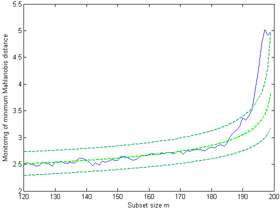

| Flexible Statistics Data Analysis Toolbox™ |
|
(FAST) Minimum Mahalanobis distance
[mmd,Un] = FSMmmd(Y,bsb)
[mmd,Un,BB] = FSMmmd(Y,bsb,param1,val1,param2,val2,...)
[mmd,Un,BB] = FSMmmd(Y,bsb) stores the values of the minimum Mahalanobis distance and other multivariate quantities in each step of the forward search. This function is called from FSM in order to compute and store the information which is required to run the automatic outlier detection procedure.
Remark: This routine performs the forward search with time increasing almost linearly with the sample size. This makes its use with datasets of very lage size feasible in reasonable time. This is possible because this routine 1) uses efficient algorithms for both subset updating and computation of Mahalanobis distances or residuals; these algorithms do not need matrix inversion, but simple matrix multiplications, and avoid the use of sorting procedures. 2) uses a selection of the best mixture of linear indexing and logical indexing along the search; 3) optimizes the choice of the best alternative between the matrix multiplication operator *. and the MATLAB function @bsxfun; 4) uses a new procedure for finding the k-th order statistics, to be used when computation of repeated minima becomes too expensive (for further details see Riani, Perrotta and Cerioli, 2013; The Forward Search for Very Large Datasets). Function FSMmmdeasy has the same input/ouptut of FSMmmd, is much easier to understand, but it is much slower. Riani Perrotta and Cerioli (2013) show that the new algorithms implemented in FSMmmd enable a reduction of the computation time by more than 80% with respect to those implemented in FSMmmdeasy.
Y is an n-by-p matrix. Rows of Y represent observations, while columns represent variables . bsb is a vector containing the list of the units forming the initial subset. If bsb=0 (default) then the procedure starts with p units randomly chosen else if bsb is not 0 the search will start with m0=length(bsb)
[mmd,Un,BB] = FSMmmd(Y,bsb) returns the following information
Un − (n-init) x 11 matrix which contains the unit(s) included
in the subset at each step of the fwd search.
REMARK: in every step
the new subset is compared with the old subset. Un contains the unit(s)
present in the new subset but not in the old one.
Un(1,2) for example
contains the unit included in step init+1.
...
Un(end,2) contains the units
included in the final step of the search.
BB − n x (n-init+1) matrix containing the information about the units belonging
to the subset at each step of the forward search.
1st col = indexes of the units forming subset in the initial step
...
last column = units forming subset in the final step (all units)
|
Note FSMmmd is nothing but a simplified version of function FSMeda. |
[mmd,Un,BB] = FSMmmd(Y,bsb,param1,val1,param2,val2,...) specifies one or more of the name/value pairs described in the following table.
| Parameter | Value |
|---|---|
| 'init' |
scalar, which specifies the point where to initialize the search and start monitoring required diagnostics. Notice that if bsb is supplied init>=length(bsb). if init is not specified it will be set equal to floor(n*0.6). |
| 'msg' |
Scalar which controls whether to display or
not messages about great interchange on the screen |
| 'plots' |
If plots=1 a plot of minimum Mahalanobis distance appears on the screen with 1%, 50% and 99% confidence bands else (default) no plot is shown. |
n=200;
v=3;
m0=4;
randn('state',123456);
Y=randn(n,v);
%Contaminated data
Ycont=Y;
Ycont(1:5,:)=Ycont(1:5,:)+3;
[fre]=unibiv(Y);
%create an initial subset with the 4 observations, which fell the smallest
%number of times outside the robust bivariate ellipses, and with the
%lowest Mahalanobis Distance.
fre=sortrows(fre,[3 4]);
bs=fre(1:m0,1);
[mmd,Un,BB]=FSMmmd(Ycont,bs,'plots',1);

n=20000;
v=3;
n=20000;
v=3;
m0=10;
randn('state',123456);
Y=randn(n,v);
% 25\% of Contaminated data
Ycont=Y;
Ycont(1:5000,:)=Ycont(1:5000,:)+3;
[fre]=unibiv(Y);
%create an initial subset with the 4 observations, which fell the smallest
%number of times outside the robust bivariate ellipses, and with the
%lowest Mahalanobis Distance.
fre=sortrows(fre,[3 4]);
bs=fre(1:m0,1);
% Compare the computational time of FSMmmd with that of FSMmmdeasy
tic;
[mmd,Un]=FSMmmd(Ycont,bs);
toc;
tic;
[mmd,Un]=FSMmmdeasy(Ycont,bs);
toc;
In out computer running the above produced the following output
Warning: interchange greater than 10 when m=16667 Number of units which entered=11 Elapsed time is 22.007305 seconds. Warning: interchange greater than 10 when m=16667 Number of units which entered=11 Elapsed time is 159.585365 seconds.
FSM, FSMeda, FSMinvmmd, FSMmmdeasy
|
|
fsminvmmd.html | fsmmmdeasy.html |
|